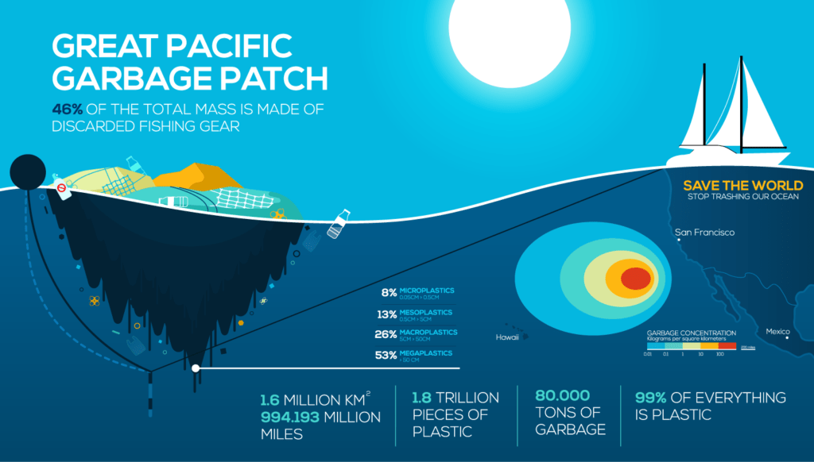
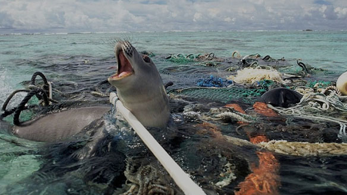
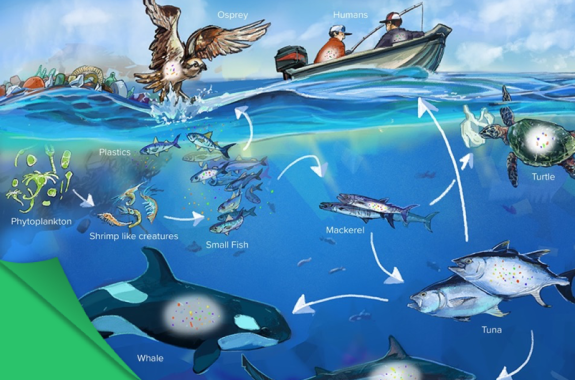

How Much Plastic Floats In The Great Pacific Garbage Patch?
The mass of all the plastic in the Great Pacific Garbage Patch was estimated to be 80,000 tonnes, which was actually 4-16 times more than previous calculations. (Fun Fact: This combined weight is also equivalent to 500 Jumbo Jets) Since the weight of all the floating plastic is so heavy, you can only imagine that the number of plastic pieces would be very big. 1.8 trillion plastic pieces is estimated to be floating in the patch. This number is equivalent to that of 250 pieces of debris for every human in the world. This number is obviouly a huge estimate, but scientists have mentioned that the maximum amount could be up to 3.6 trillion pieces.

Impact On Marine Life And Humans
It is obvious that plastic pollution in the Great Pacific Garbage Patch poses a threat to the safety and health of all kinds of marine animals, but there are also health and economic implications for humans as well. Since plastic has become a common substance in the ocean, animals tend to confuse it for food which causes malnutrition and threatens their overall health. Studies have shown that about 700 species have encountered marine debris, and 92% of these interactions are with plastic. Floating at the surface of the Great Pacific Garbage Patch (GPGP) is 180x more plastic than marine life. For example, sea turtles by-caught in fisheries operating within and around the patch can have up to 74% (by dry weight) of their diets composed of ocean plastics. Once plastic enters the marine food web, there is a possibility that it will contaminate the human food chain as well. Through a process called bioaccumulation, chemicals in plastics will enter the body of the animal feeding on the plastic, and as the feeder becomes prey, the chemicals will pass to the predator – making their way up the food web that includes humans. According to a study conducted in collaboration with Deloitte, yearly economic costs due to marine plastic are estimated to be between $6-19bn USD. So therefore, the trash that humans send out to the ocean comes back right to us and affects our overall health as well.
 